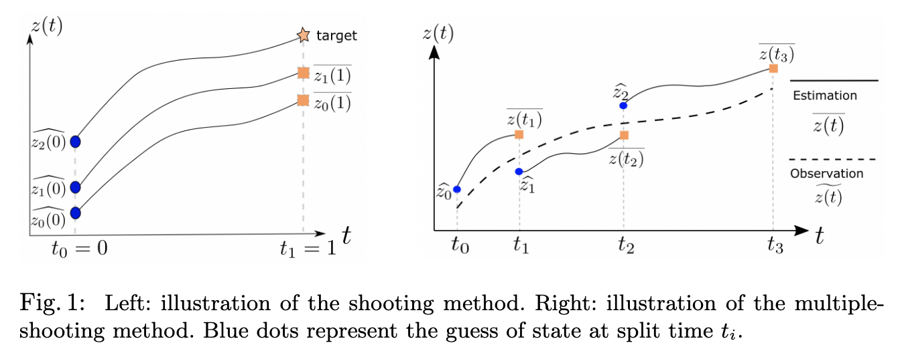
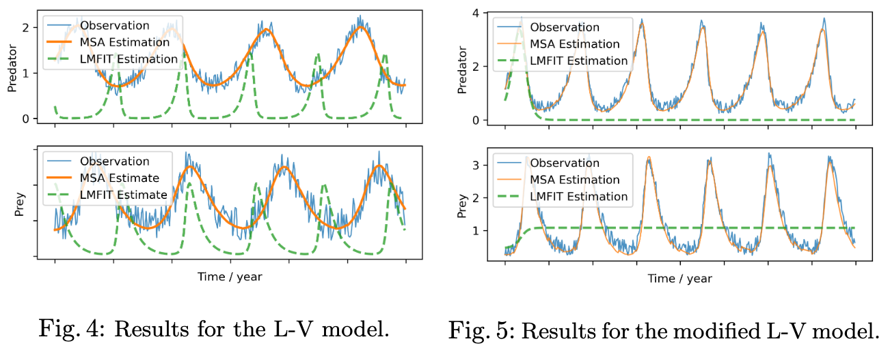
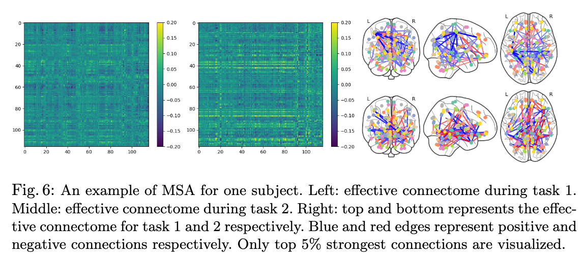

Abstract
Dynamic causal modeling (DCM) is a Bayesian framework to infer directed connections between compartments,
and has been used to describe the interactions between underlying neural populations based on functional
neuroimaging data. DCM is typically analyzed with the expectation-maximization (EM) algorithm. However,
because the inversion of a large-scale continuous system is difficult when noisy observations are present,
DCM by EM is typically limited to a small number of compartments (less than 10). Another drawback with
the current method is its complexity; when the forward model changes, the posterior mean changes, and we
need to re-derive the algorithm for optimization. In this project, we propose the Multiple-Shooting Adjoint (MSA)
method to address these limitations. MSA uses the multiple-shooting method for parameter estimation in ordinary
differential equations (ODEs) under noisy observations, and is suitable for large-scale systems such as whole-brain
analysis in functional MRI (fMRI). Furthermore, MSA uses the adjoint method for accurate gradient estimation in the
ODE; since the adjoint method is generic, MSA is a generic method for both linear and non-linear systems, and does
not require re-derivation of the algorithm as in EM. We validate MSA in extensive experiments: 1)
in toy examples with both linear and non-linear models, we show that MSA achieves better accuracy in parameter
value estimation than EM; furthermore, MSA can be successfully applied to large systems with up to 100 compartments;
and 2) using real fMRI data, we apply MSA to the estimation of the whole-brain effective connectome and show
improved classification of autism spectrum disorder (ASD) vs. control compared to using the functional connectome.
Algorithm

The multiple-shooting method [1] is an extension of the shooting method to long time-series; it splits a long
time-series into chunks,and applies the shooting method to each chunk. Integration of a dynamicalsystem
for a long time is typically subject to noise and numerical error, whilesolving short time-series is generally easier and
more robust.As shown in the right subfigure of Fig. 1, a guess of initial condition at time t0is denoted as z0, and we can
use any ODE solver to get the estimated integral curve z(t), t∈[t0,t1]. Similarly, we can guess the initial condition at
time t1 as z1, and get z(t), t∈[t1,t2] by integration as in Eq. 3. Note that each time chunkis shorter than the entire
chunk, hence easierto solve. The split causes another issue: the guess might not match estimationat boundary points.
Therefore, we need to considerthis error of mismatch when updating parameters,
and minimizing this mismatcherror is typically easier compared to directly analyzing the entire sequence.
Experiments on non-linear dynamical systems

Since neither the multiple-shootmethod nor the adjoint state method requires the ODEfto be linear, our MSA
can be applied to general non-linear systems. Furthermore, since our implemen-tation is in PyTorch which
supports automatic differentiation, we only need to specify f when fitting different models, and the gradient will
be calculated automatically. Therefore, MSA is an off-the-shelf method, and is suitable for general non-linear ODEs
both in theory and implementation.
Application to whole-brain dynamical causal modeling

We use the AAL atlas [20] containing 116 ROIs. For eachsubject, the parameters for dynamic causal modeling as
in Eq. 10 is estimatedusing MSA. An example snapshot of the effective connectome (EC) during thetwo tasks
is shown in Fig.6, showing MSA captures the dynamic EC during different tasks.